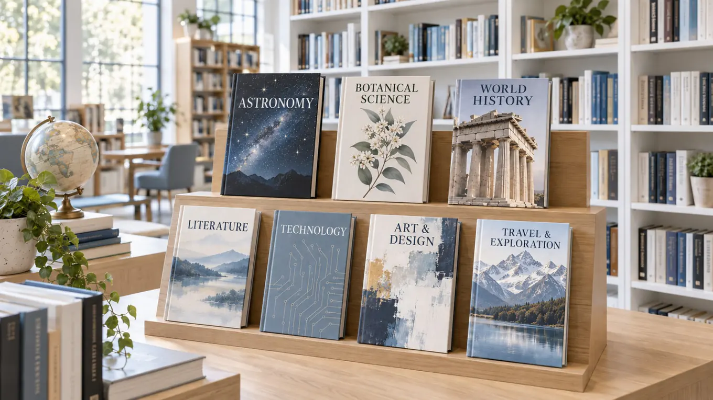

⌕
01
Fiction & Literature
Novels, classics, poetry, short stories and award-winning contemporary writing.
Learn more →DIGITAL KNOWLEDGE, BEAUTIFULLY ORGANISED
Browse an organised catalogue spanning stories, ideas, professional skills and academic discovery.
EXPLORE & DISCOVER
Explore organised genres, academic subjects, featured collections and format-based shelves built for discovery.
Novels, classics, poetry, short stories and award-winning contemporary writing.
Learn more →Leadership, entrepreneurship, economics, investing and workplace skills.
Learn more →Programming, AI, data, cybersecurity, design and emerging technologies.
Learn more →Peer-reviewed journals, popular science, medicine and reference works.
Learn more →World history, memoirs, culture, politics and inspiring life stories.
Learn more →Age-appropriate stories, learning books and imaginative collections.
Learn more →Habits, communication, wellbeing, productivity and personal growth.
Learn more →Textbooks, exam preparation, language learning and classroom resources.
Learn more →Art, photography, music, cinema, architecture and cultural studies.
Learn more →COLLECTION SPOTLIGHT
Category pages bring related ebooks, audiobooks, journals and reference works together so readers can compare options before choosing a direction.
Browse Collections →GENRE MAP
DISCOVERY SHELVES
Recently added books and journals across fiction, technology and learning.
Shortlists that introduce a subject without overwhelming new readers.
Books, journals and references grouped for sustained study.
SUBJECT PATHWAYS
Follow connected shelves from a single genre into authors, eras, formats, skill levels and research themes that expand your search.
See Related Topics
CATEGORY ROUTES
Start with fiction, history, business, science, art or education.
Compare ebooks, audiobooks, journals, references and short reads.
Choose beginner introductions, practical guides or advanced works.
BROWSING AIDS
Follow precise themes inside larger genres and academic areas.
Find introductory, intermediate or specialist material faster.
Separate audio, ebook, journal and reference resources at a glance.
Discover nearby shelves that connect to the subject you opened.
Spot new, popular, staff-picked and research-ready resources.
Check accessible formats and current borrowing options before opening a title.
“A well-built category is a doorway: clear enough to enter quickly, rich enough to keep exploring.”
STACKLY COLLECTIONS TEAM
COLLECTION NOTES
Classic and contemporary shelves for story-driven reading.
Business, technology and communication titles for practical growth.
Science, education and reference works grouped for study.
CATEGORY QUESTIONS
Yes. A book may appear under genre, subject, format and curated collection pages when it fits multiple discovery paths.
Collections combine reader demand, librarian review, subject balance and newly added resources.
Members can save titles and lists from a category, then return to them from the dashboard.
EXPLORE BY INTEREST
Browse literature, science, technology, business, history and creative subjects through organised collections made for easy discovery.
FROM QUICK TO DEEP
Start with a short read, continue with a complete book or move into journals and archives when your research needs more depth.
BROWSING STRUCTURE
Move from broad areas such as business, science and literature into focused themes, formats and reading levels. Each category can combine ebooks, journals, reference works and audio resources.
READING DEPTHS
Use short reads for quick learning, full-length books for structured understanding and journals for current research. Category pages make those differences visible before you open a title.
LIBRARY IN FOCUS